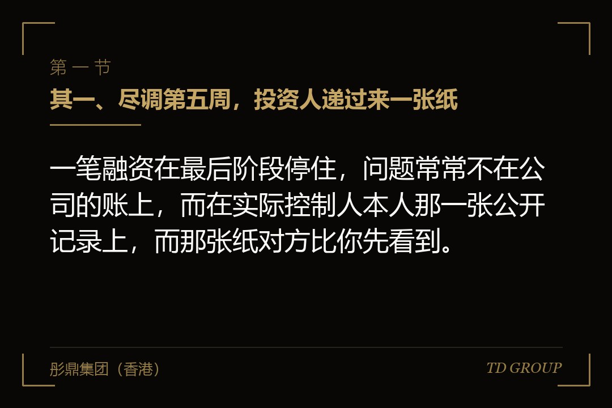
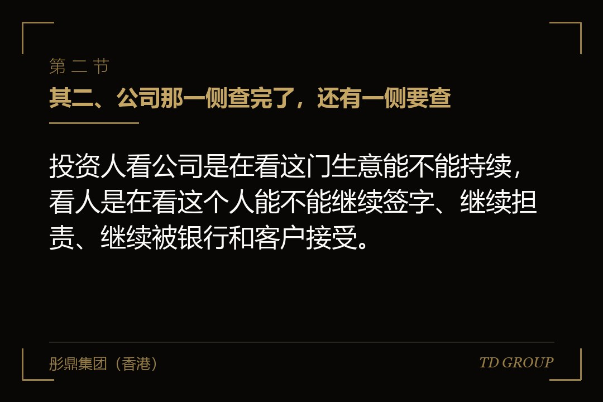
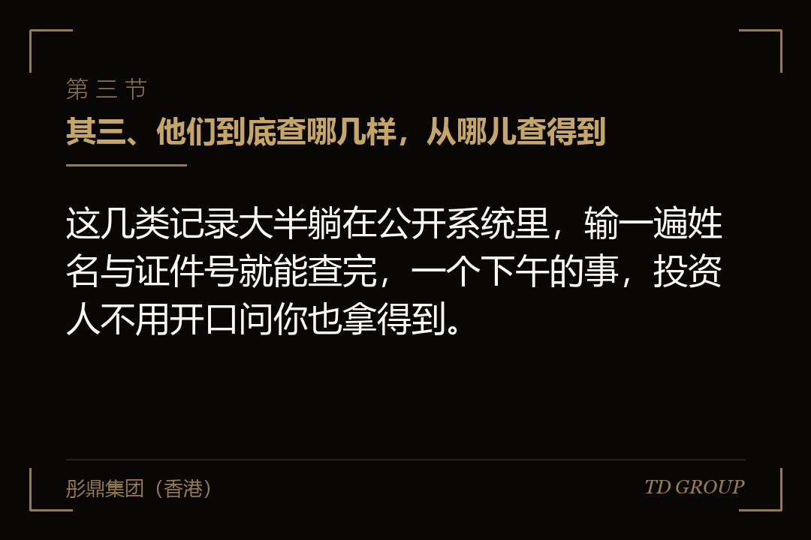

其一、尽调第五周，投资人递过来一张纸

结论先行：一笔融资在最后阶段停住，问题常常不在公司的账上，而在实际控制人本人那一张公开记录上，而那张纸对方比你先看到。
假设有位做智能装备的老板，公司去年营收一亿八，净利两千多万，报表由会计师事务所审过两年，客户也不算集中。尽调走到第五周，投资人把一张纸放到桌上：上面不是公司的东西，是他本人的公开查询结果。
那张纸上有一行：三年前他替一个同乡的公司做了连带责任保证，那家公司后来没能还上，法院判了，他被列入失信被执行人名单，到今天还没有了结。
老板当场的反应是，那笔事跟我这家公司一点关系都没有。这句话本身没错，可它解决不了投资人的问题。投资人要问的不是这笔债该谁还，而是三件事：交易文件由谁签、这个人签的字算不算数、他手上那部分股权会不会被别人先一步动了。
后面两个月，这轮融资什么都没往前走，只做了一件事：把那笔旧账了结掉，再去执行法院申请把记录处理干净。等这件事办完，投资人内部的议题已经换了一轮，估值也重新谈过一次。
这不是财务问题，也不是法律细节。它是一类长期被漏掉的东西：公司那一侧被翻了个遍，人这一侧从来没人系统查过，而后者查起来便宜得多。
其二、公司那一侧查完了，还有一侧要查

结论先行：投资人看公司是在看这门生意能不能持续，看人是在看这个人能不能继续签字、继续担责、继续被银行和客户接受。
讲尽调的文章，查的大多是公司：资质证照挂没挂在经营主体名下、有没有吃过环保与安全的罚单、账是不是记了两套。这一篇的对象换了——查的是人。
为什么要单独查人。因为在一家非上市企业里，实际控制人不是一个称呼，他是整套安排的信用底座。授信是看着他批的，大客户的框架协议是看着他签的，公司在外面的保证多半也有他一份。
所以投资协议签下去的时候，要他本人出面的地方比多数创始人想的多：作为股权出让方签转让协议、作为创始人作出个人陈述与保证、在某些条款下就回购义务承担个人责任。有一处签不下去，交易就不完整。
还有一层很现实的原因：查人便宜。公司的账要请中介进场看两三周，人的记录输一遍名字就出来了。所以它往往是投资人最早跑完的一项，只是他跑完不一定当场告诉你。
这就形成了一个很不对称的局面：对方在第二周就知道了，企业方在第五周才被告知。中间那三周，估值、条款、节奏，对方都是带着这份信息在谈的。
其三、他们到底查哪几样，从哪儿查得到

结论先行：这几类记录大半躺在公开系统里，输一遍姓名与证件号就能查完，一个下午的事，投资人不用开口问你也拿得到。
头一样是被执行与失信。法院的执行信息公开渠道可以按姓名查到被执行人、失信被执行人名单以及限制消费令，案号、执行法院、未履行金额一般都在上面。
第二样是裁判文书。已经公开的判决能看到他本人当的是原告还是被告、案由是什么、判了多少、有没有进入执行。案由这一栏信息量最大——民间借贷、股权转让纠纷、劳动争议，各自意味着完全不同的东西。
第三样是企业信用信息公示系统。按自然人查，能看到他名下所有的投资与任职：哪几家公司、在哪几家挂着法定代表人或者董监高，以及那几家现在是存续、吊销还是已注销，有没有被列入经营异常名录或者严重违法失信名单。
第四样是行政处罚与欠税公告。市场监管、税务、环保、应急管理各自的公示渠道会把被处罚主体列出来，有些还会点到直接负责的主管人员。
第五样是股权的权利状态：他持有的本公司股权有没有被质押、有没有被司法冻结。这一样最要紧，因为它直接决定这笔股权还能不能转、还能不能增资。
第六样是个人征信。这一份在公开渠道查不到，要本人授权自己去打，所以它通常出现在协议签署前后，由企业方主动提供。投资人拿不到的时候，会用前面五样去反推。
最后是竞业限制。它不在任何公开系统里，只在他跟前一家单位的那份文件里，所以它几乎全靠问——而这一问的时点，往往在尽调的很后面。
其四、失信名单与限制消费令，卡的不是面子
结论先行：被列入失信名单与被限制消费，卡住的是任职资格、出行、银行账户与授信这四样，每一样都长在交易链条上。
先说任职。在多项联合惩戒安排之下，被列入失信被执行人名单的自然人，在新设主体担任法定代表人、董事、监事与高级管理人员会受到限制。具体范围与期限以主管机关正式规则文本为准，但方向是确定的：他能不能出现在新主体的名单上，不由这家公司说了算。
这一条为什么要紧。融资之后常常要设新的持股平台、在境内外新设一层主体、换发一版营业执照，这些动作都要有人去做法定代表人，而那个人通常就是他。
再说出行。限制消费令会限制乘坐飞机、高铁与列车软卧等消费。假设有位做医疗器械的老板，投资人安排了一轮跨城走访，行程排到第三天他才说自己去不了——这时候要解释的已经不只是行程。
第三是账户与授信。银行在贷前贷中都会看实际控制人的涉诉与失信情况，一旦命中，续贷、新增授信、开新的结算户都会卡住。而企业在融资这段时间，偏偏最需要银行这边稳住不动。
第四是股权本身。进入执行程序之后，申请执行人可以申请查封、冻结被执行人名下的股权。他要转让的那部分股权如果被冻结，这笔交易在工商登记那一步就走不下去。
所以投资人看到这一项时，想的不是道德评价，是可执行性：这个人现在还能不能完整地把一笔股权交出来。答案不确定的时候，最省事的做法就是先停下来等。
其五、替别人签的那些保证，是这张表上最容易被低估的一项
结论先行：个人替他人债务作的连带责任保证，不上公司报表也不在公司的合同柜里，却是投资人测算风险时最先扣分的一项。
连带责任保证的意思很直接：债权人可以不先去找借款人，直接找保证人要钱。签的时候通常只是借款合同后面加的一页条款，很多人签完就忘了。
假设有位做建材的老板，五年前替一家上游供应商签过一份最高额保证。供应商后来没能按期还款，债权人先起诉的是他。这笔钱他一直在按期分摊着还，公司的账上一分钱都看不出来。
这一项跟公司对外担保不是一件事。公司对外担保损的是公司的资产，走的是章程与股东会决议那条线；个人保证损的是他本人的财产，而他本人最主要的财产，往往就是这家公司的股权。
投资人担心的正是这个闭环：一旦债权人对他执行，能拿来执行的东西里排在最前面的，恰恰是投资人刚刚花钱买进来的那家公司的股权。
还有一层叠加。这一轮投资协议里，回购义务常常会要求他本人承担个人责任。旧的保证责任还挂着，新的个人责任又要签一份，两笔都落在同一个人、同一份财产上。这两笔加起来有多重，是投资人一定会算的一道题。
这类事我们跟华尔街俱乐部有合作，跨境的股权交易里，交割前才被翻出来的个人侧问题见得多一些，其中比例最高的就是这一类保证——它既不在报表上，也不在企业方自己整理的那份资料清单上。
可行的做法是在谈估值之前，把本人这些年签过字的保证文件找出来数一遍：给谁签的、金额多少、主债务还剩多少、保证期间到什么时候。数不清楚的那几笔，比数得清楚的危险得多。
其六、名下那几家别的公司，扎人的不是数量是状态
结论先行：投资人看的不是你名下有几家公司，而是那几家里有没有吊销未注销的、被列入经营异常的、正在被执行的，以及跟本公司做同一门生意的。
多数做了十几年生意的老板，名下都不止一家主体：早年开的贸易公司、跟朋友合伙的项目公司、给亲戚挂过名的那家、还有几家做完一单就停在那儿的。数量本身不是问题。
问题在状态。一家被吊销营业执照但一直没办注销的公司，法律上并没有消失，它的清算义务仍然挂在原来的股东与负责人身上，公示系统上那几个字也一直显示着。
假设有位做环保工程的老板，早年帮同学的公司挂过法定代表人，人早就不管了，公司停了也没注销，后来被吊销。尽调查出来的时候，那家公司名下还有一笔没了结的执行案件，而登记在册的负责人仍然是他。
被列入经营异常名录是同一类：多数是没按时报送年度报告或者登记的住所联系不上，办起来不难，但只要挂着，对方的风控清单上就多一行要解释的东西。
同业那一类要单独说。名下另有一家做同类业务的公司时，投资人问的不是要不要罚你，而是两件事分不分得开：客户是不是同一批、钱有没有在两边来回走、人员和设备是不是共用。答不清楚，这一轮的收入口径就要被重新划一遍。
顺带一句，帮别人挂名法定代表人这件事，在尽调里从来不会被当成人情。登记是什么就是什么，那家公司出的事，登记在册的人要先站出来解释。
其七、竞业限制，以及涉诉里要单独拎出来的那两类
结论先行：投资人怕的不是有官司，是有一类官司会直接落到本公司的股权上，或者会把这家公司的经营基础推翻。
先分类。同样是被告，案由不同分量差得很远。买卖合同、建设工程合同这一类纠纷，做实业的多少都会有，投资人看的是金额和频率；劳动争议看的是管理水平，不是交易风险。
真正要单独拎出来的有两类。一类是民间借贷与保证责任，它会走到执行，执行会走到股权。另一类是股权转让纠纷或者股东资格确认之诉——如果打的正是本公司的股权，那这轮交易的标的本身就存在争议，没有一家投资人会在这个状态下交割。
还有一个容易被忽略的判断：已了结与未了结的差别。已经履行完毕的案件不构成障碍，但企业方要拿得出结案文书或者履行完毕的证明；拿不出来的时候，公开系统上显示的仍然是一个未完成状态，解释起来要多花好几周。
再说竞业限制。这一条在公开系统里查不到，但它在不少创始人身上真实存在：从原来那家单位出来时签过一份竞业协议，期限还没走完，对方还在按月付补偿。
它的风险不在于本人被判赔多少。真正麻烦的是，一旦被认定这家新公司的业务落在竞业范围之内，前雇主可以主张的东西会往这家公司身上延伸，而投资人刚刚要投的正是这家公司的业务本身。
所以这一条的正确处理不是回避提问，而是把那份协议原件找出来：期限从哪天起算、范围怎么写的、补偿实际付到了哪个月。这三样清楚了，才谈得上判断它有没有影响。
其八、哪些能清掉，哪些只能披露：一张今天下午就能拉的自查表
结论先行：这七类里能在交割前真正了结的通常只有两三类，其余的处理办法是提前书面披露并写进交易安排，不是指望对方查不到。
先说能了结的。已经履行完毕的债务，可以按规定向执行法院申请把相关记录作相应处理，具体条件与办理期限以主管机关正式规则文本为准；名下那些停了多年的空壳主体可以走注销；经营异常名录里的多数情形补报之后可以申请移出；已经还清的股权质押可以办解押。
这几样有一个共同点：办的时间比想的长。走的都是别人的流程——法院的、登记机关的、税务的，一步压一步，按月算不能按周算。所以要在意向书阶段就开始动，不是等交割日临近才想起来。
再说了结不掉的。还在履行期的债务、期限没满的竞业限制、正在审理的案子、已经形成的征信记录，这几样在交割前无论如何办不完。对这一类，走得通的路只有一条：提前书面披露。
披露不是认错，是在交易结构里给这件事找一个位置。常见做法是写进披露清单以排除陈述与保证的适用范围，把一部分对价放进共管账户等它了结，或者列为交割后事项并约定期限与后果。
顺序不能反。企业方主动交出来的，是一份可以谈的清单；被对方查出来的，是一次信任事件。同样一条记录，两个时点摆出来，对方读到的意思完全不同。
收口给一张自查表，不用请中介，也不用等任何人，材料全在自己手上。头一步是用本人姓名与证件信息，把前面那六类公开记录逐项查一遍，每一页截图存档，带上查询时间。
第二步是把近亲属那一栏也扫一遍。配偶与共同生活的成年子女在限制消费的执行中会被一并限制，代持与挂名也常出现在这一层。这一步很多人跳过，而它恰恰是对方一定会做的。
第三步是给每一项标三个字之一：已了结、在办、没动。已了结的补齐证明文件，在办的写清楚预计什么时候完，没动的写清楚为什么没动。
第四步是把没动的那几项按处理周期排序，最长的那个排在最前面，然后倒推时间表：如果它要走四个月，那意向书就不能签一个三个月后交割的安排。
这四步跑完，多数人手上会剩下一张不到十行的清单。它不好看，但它是你自己的清单，而不是对方递过来的那张纸。按这七条扫一遍，你名下那几样里，最先该动的是哪一个。